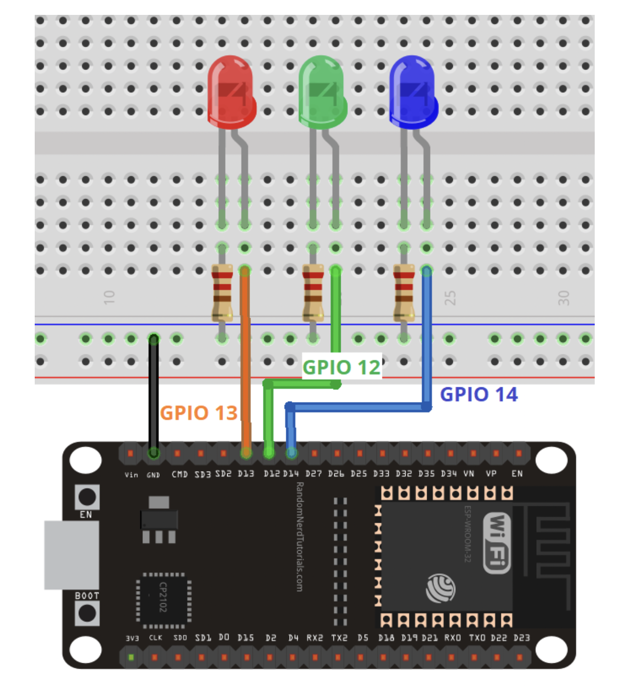

# assignment
# ---------------------------------
for my assignmnet for this week, i decided to create a web server that could control the color of an LED
i followed this tutorial, except i used one single multi-color LED instead of a separate LED for each color.
in following the tutorial, i downloaded the SPIFFS filesystem uploader so that i could upload python/javascript to the board.
because i was only using the one multi-color LED, I consolidated the number of ground pin connections.
after uploading the code and connecting the circuit, this was the result: